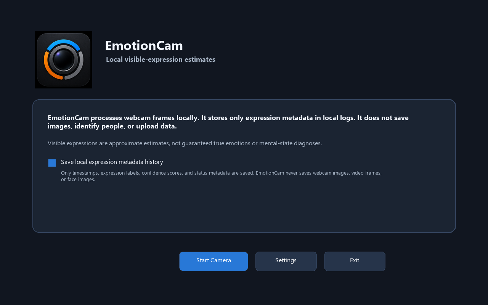
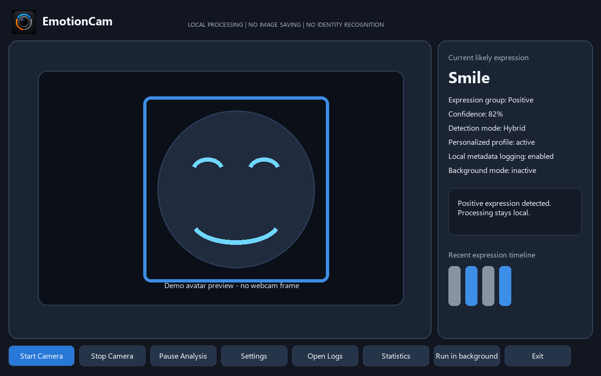
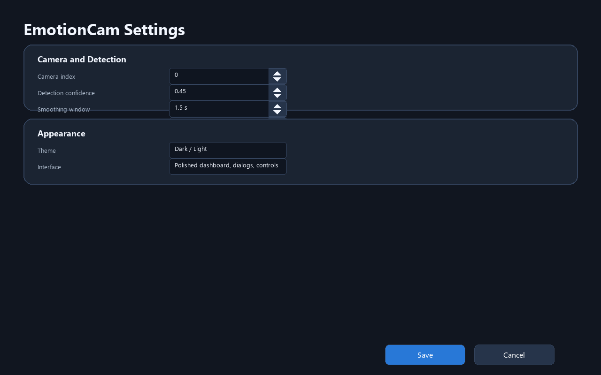
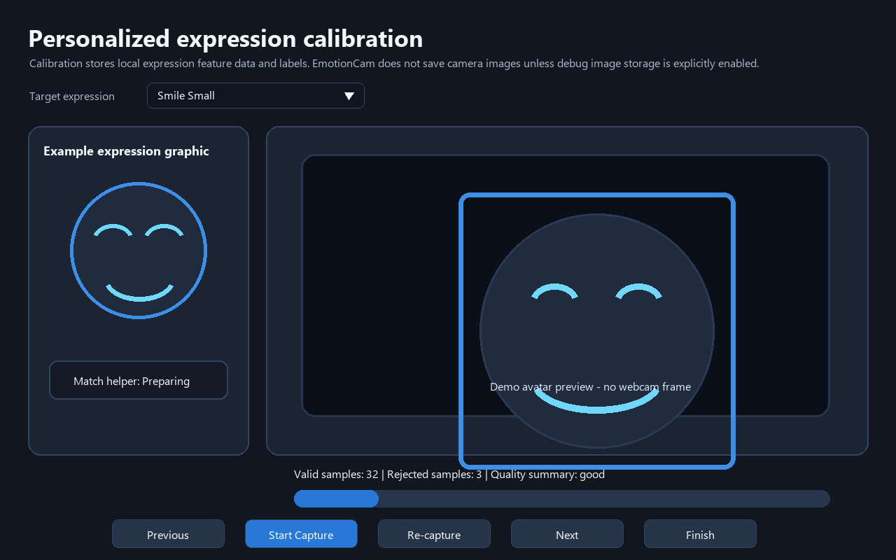
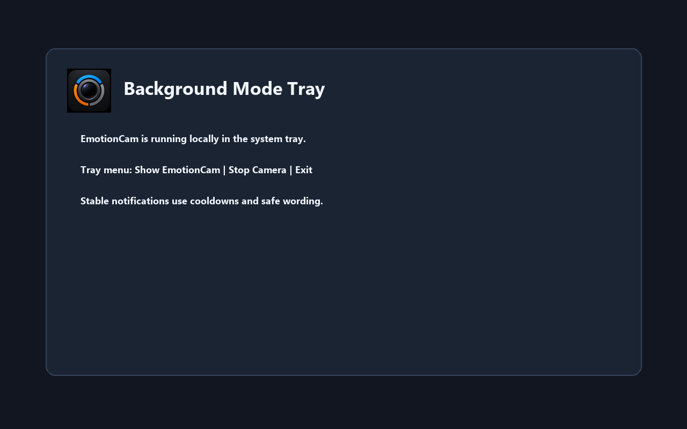

Before presenting: close other webcam apps, allow Windows camera access, use steady lighting, and keep raw calibration image storage off.
Quick Start
1. Open EmotionCam
Show the final icon, startup privacy copy, and metadata-history choice.
2. Start the camera
Show visible-expression estimates. Explain that screenshots here use a demo avatar rather than real webcam frames.
3. Show Settings
Demonstrate visible spinner arrows and switch from Dark to Light theme.
4. Show Calibration and Statistics
Use dropdown calibration, local example graphics, match helper, then show local Statistics charts.
Demo Flow
1
Launch EmotionCam and show the startup screen.
2
Click Start Camera; explain local visible-expression estimates.
3
Smile and point out the blue positive-group rectangle.
4
Click Stop Camera; show
Camera stopped.5
Open Settings; click spinner arrows and switch Dark/Light theme.
6
Open calibration; use dropdown, example graphic, match helper, Start Capture, Re-capture, Previous, Next, and Finish.
7
Open Statistics; show today balance, weekly balance, and label counts.
8
Show optional user profile and disabled-by-default text-only email summaries.
9
Run in background, explain tray behavior, open logs, and exit.
Key Screens






Presenter Materials
Detailed presenter script · User manual · Screenshot checklist
Troubleshooting
- Camera unavailable: close Camera/Teams/Zoom/browser calls and verify Windows camera permissions.
- No face or poor calibration quality: improve lighting and hold still.
- No tray: EmotionCam minimizes to the taskbar as a fallback.
- Do not force negative expressions for a popup demo; explain cooldown behavior instead.